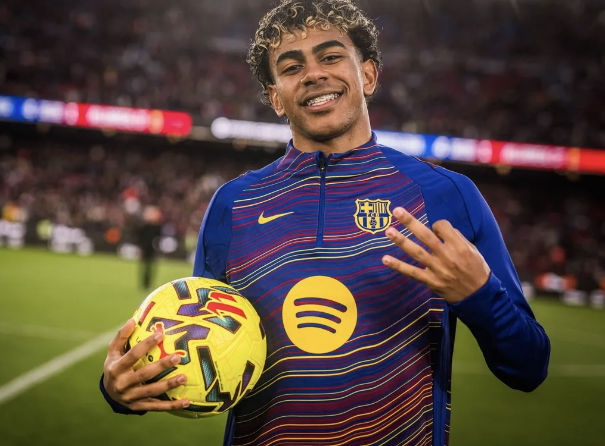

European football continues to produce emerging talents capable of influencing major competitions at a young age as Lamine Yamal has now scored his first hattrick at a very young age against Villarreal.
Modern academies emphasize tactical awareness alongside technical skill. Young players now integrate into first teams earlier than previous generations.
Sports science advancements enable younger players to meet elite physical demands more effectively.
With consistent development, several rising players are positioned to become key figures in domestic and international tournaments.